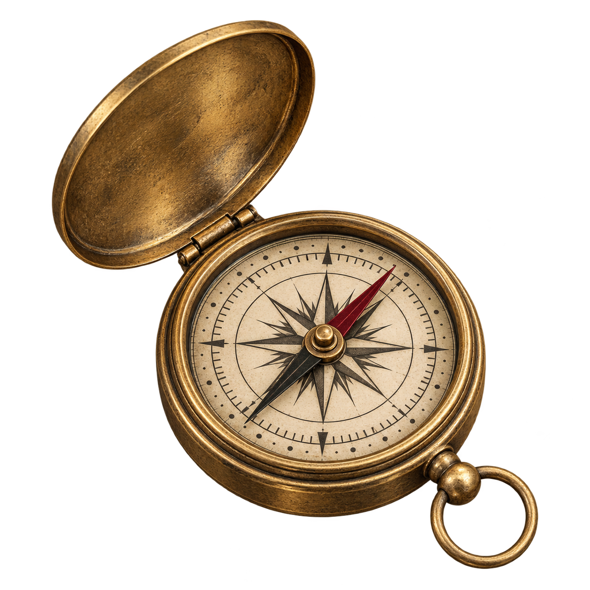
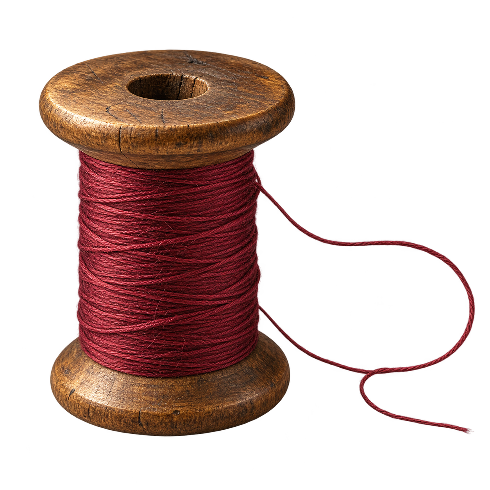
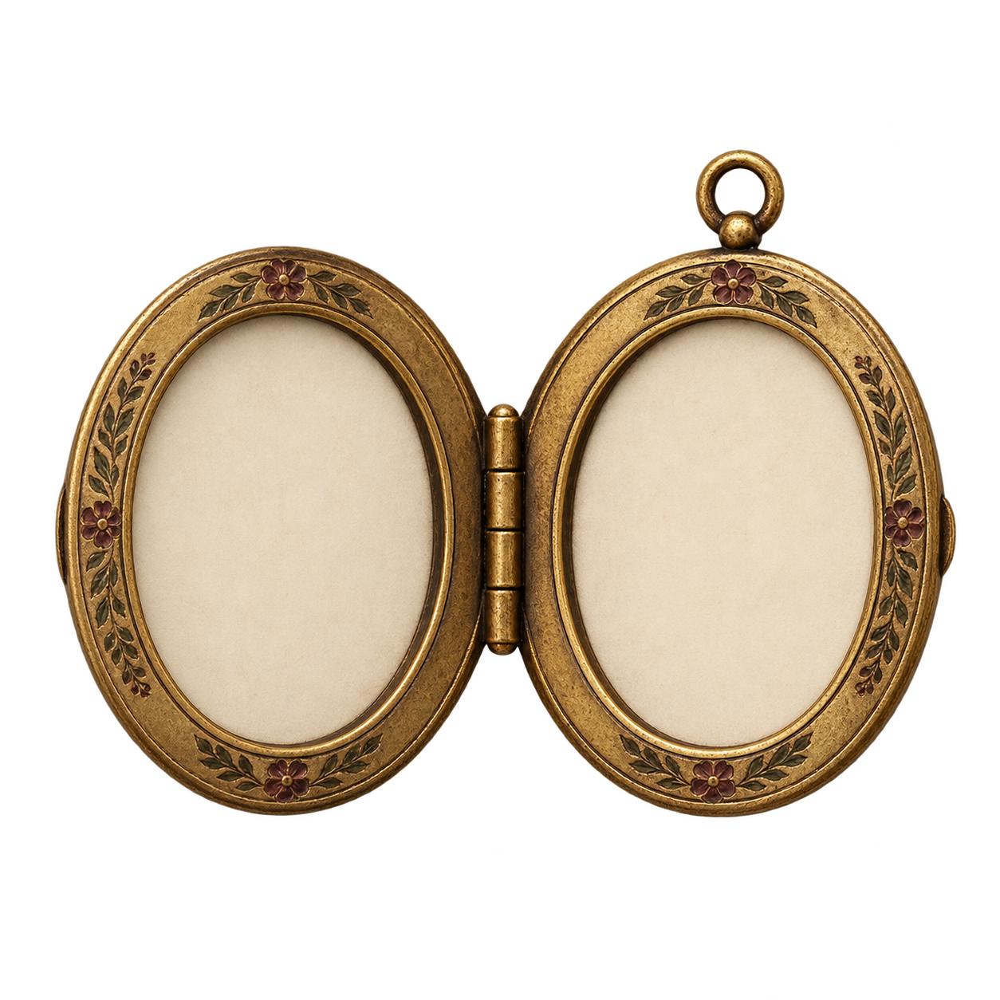

Compass
Journeys / Choice
What guides the character when the route is uncertain?
Download PNG16 transparent images for Humanities lessons. Use an object to invite an interpretation, then ask students to support it with the text.

Journeys / Choice
What guides the character when the route is uncertain?
Download PNGIdentity / Performance
Which public role conceals the character’s private feelings?
Download PNGIdentity / Self-perception
How does the character’s self-image differ from how others see them?
Download PNGPower / Agency
Who controls the rules, and what choices remain for the weaker character?
Download PNGJustice / Choice
Which values does the character weigh against each other?
Download PNGFreedom / Resistance
What has been broken, and what still limits the character?
Download PNG
Connection / Fate
Which event connects the beginning of the story to its ending?
Download PNGJourneys / Opportunity
Does departure offer freedom, escape or loss?
Download PNGAccess / Secrets
Who has access to knowledge or a place that others cannot enter?
Download PNGTime / Choice
How does limited time change a decision?
Download PNG
Memory / Belonging
What does the character choose to carry from the past?
Download PNGAbsence / Identity
Whose story is missing from the account?
Download PNGKnowledge / Hope
What becomes visible, and what remains in darkness?
Download PNGCommunication / Secrecy
What might change if the message were opened or delivered?
Download PNGMigration / Belonging
What can the traveller take, and what must remain behind?
Download PNGAchievement / Status
Who defines success, and what does it cost?
Download PNG